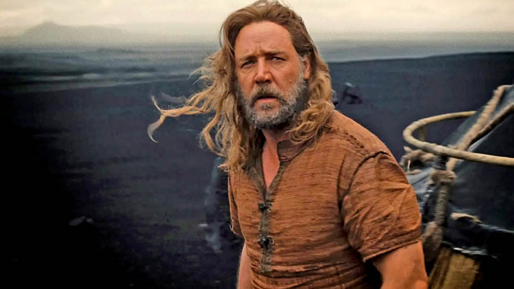
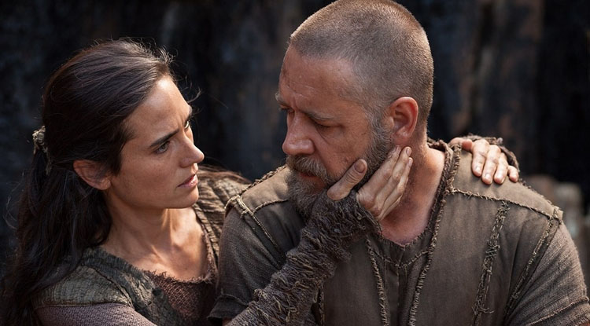
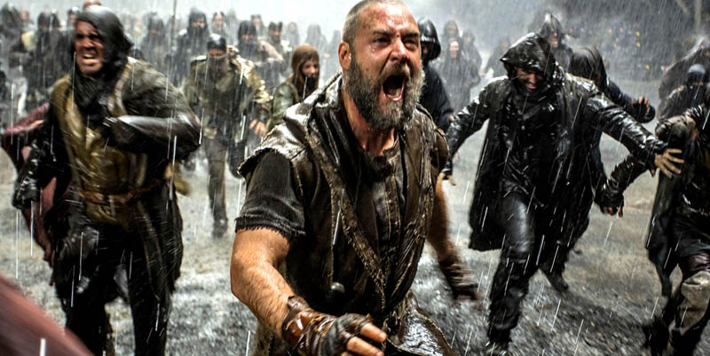
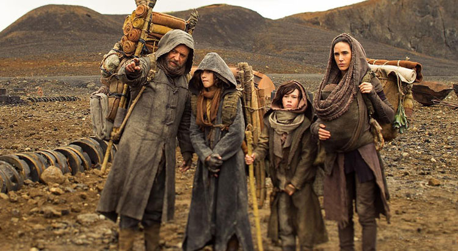

Вопросы "Ноя"...
Меня не смущали отступления от текста - библейский сюжет я знаю и без Голливуда.

источник: afmedia.ru . . Сразу скажу: меня не смущали отступления от текста Писания - библейский сюжет я знаю и без Голливуда. Да и в принципе я не рассчитывал, что фильм будет экранизацией Библии. .Вопросы "Ноя"... | Михаил Дубровский
.Скорее, это - философская притча, которая берет за основу знакомый всем сюжет и, сознательно отступая от него в некоторых местах, именно через это и пытается сообщить нечто, важное с точки зрения рассказчика.
При этом очень важно, чтобы изначальный сюжет был действительно хорошо знаком, в противном случае возникает смущение и непонимание. Как это было, например, когда советская интеллигенция читала "Мастера и Маргариту". Булгаков писал роман в ситуации, когда евангельская история была всем известна. И булгаковский текст ложился "поверх" евангельского. А спустя несколько десятилетий культурная ситуация изменилась на обратную: даже образованные люди уже не были знакомы с текстом Писания, часто этот интерес пробуждался именно при чтении Булгакова. Но теперь уже "Мастер и Маргарита" становился основанием, на которое накладывалось евангельское повествование. И нередко мешало восприятию евангельского сюжета, поскольку читающий считал, что именно в романе изложена верная версия, а в Писании - идеологически поправленная.
.С этой точки зрения нужно смотреть и Ноя. Мне кажется, фильм не претендует на изложение "как это было на самом деле". На мой взгляд, фильм - это рефлексия современного кризиса. И с этой точки зрения у меня есть несколько любопытных наблюдений.
Первое. Неожиданно много и совершенно прямо говорится о Боге. И причина кризиса названа предельно ясно: люди отступили от Бога и не следуют Его воле. При этом есть те, кто хранят верность Создателю, но они подвергаются гонениям. Можно спорить, что именно понимают авторы под верностью Создателю, но мне кажется, что тут и христиане договориться между собой не могут, чего уж ждать от Голивуда? С этой точки зрения прямое указание на отступление от Бога как основную причину кризиса намного важнее остального.
Второе. В фильме есть несколько важных диалогов. В частности, о том, что значит быть мужчиной. Мужчина - тот, кто живет по воле Неба или тот, кто сам творит свою судьбу? Кто подчиняет себе других или тот, кто любит и дает защиту? Тот, кто готов убить или тот, кто жизнь старается спасти? Вопросы, более, чем актуальные сегодня...
Третья линия - линия власти. Власть насилия или власть любви? Подчинить своей воле или дать покров и защиту. Причем этот вопрос ставится как по отношению к людям, так и по отношению к миру, земле, природе. Собственно, весь сюжет с родившимися дочерями Сима - тоже об этом: о власти выбрать, быть человеку или не быть. Выбор, который Господь предоставляет самому человеку. На мой взгляд - это очень мощное послание фильма: о нашей ответственности за собственное будущее. И перед Богом, и друг по отношению к другу. И последний диалог фильма между Ноем и его приемной дочерью - как раз об этом...

.Молитва и откровения. Характерно, что и Ной, и Тувал-Каин обращаются к Небесам с одним и тем же вопросом. Но один это делает в вере, а другой - в ожесточении. Что же касается откровений, на мой взгляд, тема очень точно схвачена. Я, конечно, не знаю точно, как конкретный исторический Ной слышал Бога. Но мой опыт богообщения очень близок показанному в фильме: Бог говорит, но остается немало "темных мест", не все понятно, в истолковании услышанного велик риск ошибки. И только действуя в вере, постепенно познаешь смысл сказанного...
Не менее интересны и рассуждения о греховности человека. Греховности, которая не отрицает образ Божий. Яркий рассказ о творении и грехопадении, равно как и о том, что мы даже в лучших своих поступках несем в себе грех - кажется, это тоже важные слова для современного мира. Да и лично для меня это - не лишнее напоминание.

Ну и конечно, очень удачен образ Мафусаила, который ярко демонстрируе тприсутствие и действие Бога в повседневности...
Можно еще многое сказать: и об актерской игре, и о ярких моментах. Но для меня лично важны именно вопросы, которые остаются после просмотра. На мой взгляд, именно это, более всего остального, говорит о явном успехе замысла.
Михаил Дубровский